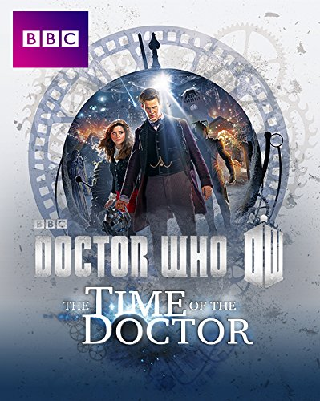
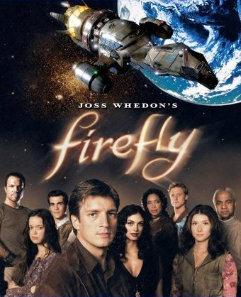

Cyrielle Fauré
Student @Le Wagon
Bachelor degree in Law, Master degree in Education. Former education officer, I want to work as a developer.
My favorite TV shows
|  |
Doctor WhoThe Doctor, from a race called the Time Lords whose home planet is Gallifrey, travels through time and space in his ship the TARDIS (an acronym for Time and Relative Dimensions In Space) with numerous companions. From time to time he regenerates into a new form (which is how the show has been running since 1963). |
|  |
FireflyFive hundred years in the future, a renegade crew aboard a small spacecraft tries to survive as they travel the unknown parts of the galaxy and evade warring factions as well as authority agents out to get them. |

|
Stranger ThingsIn a small town where everyone knows everyone, a peculiar incident starts a chain of events that leads to the disappearance of a child - which begins to tear at the fabric of an otherwise peaceful community. Dark government agencies and seemingly malevolent supernatural forces converge on the town, while a few locals begin to understand that there's more going on than meets the eye. |